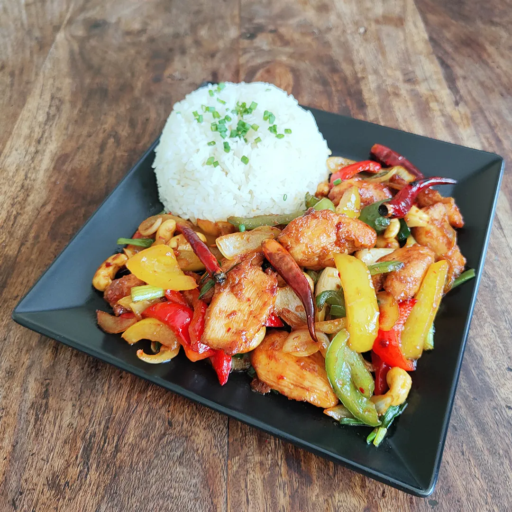
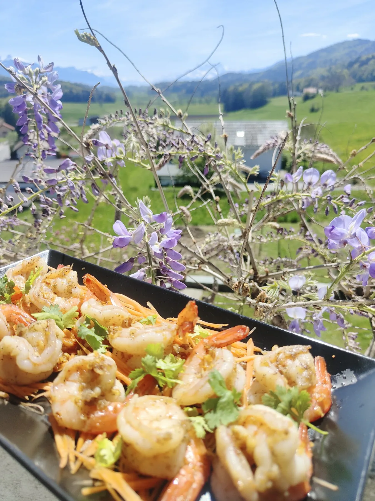
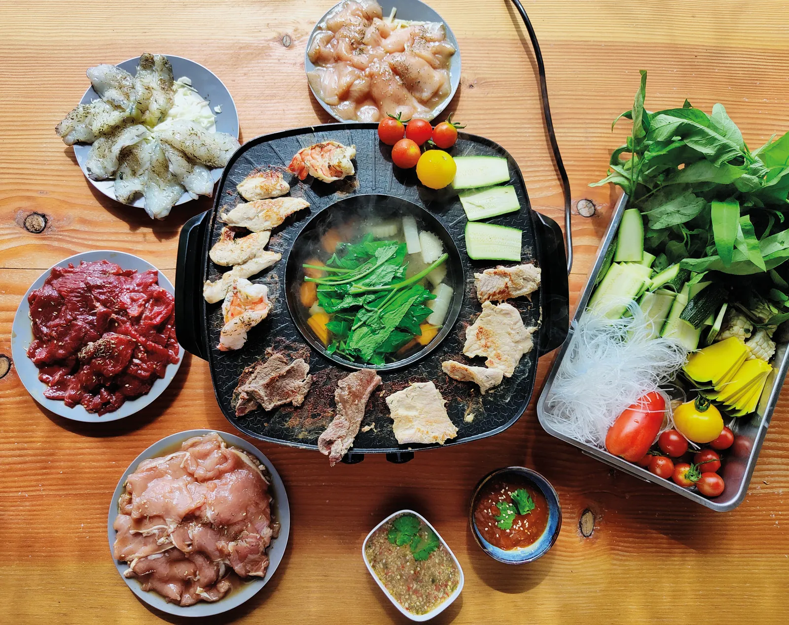
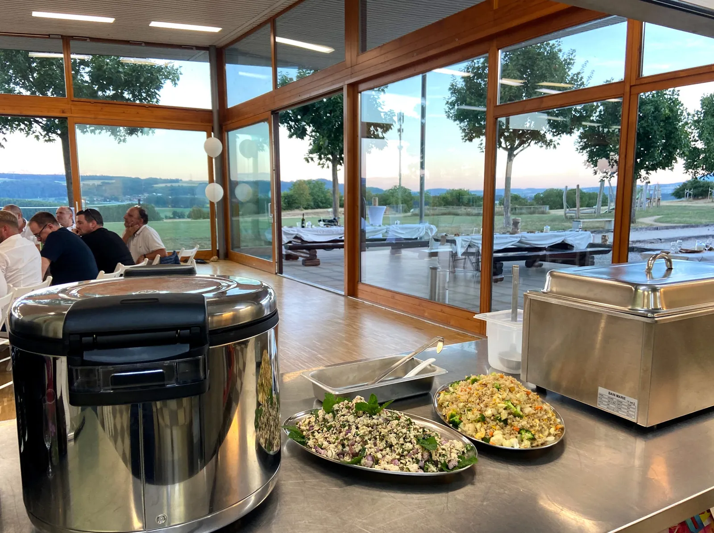
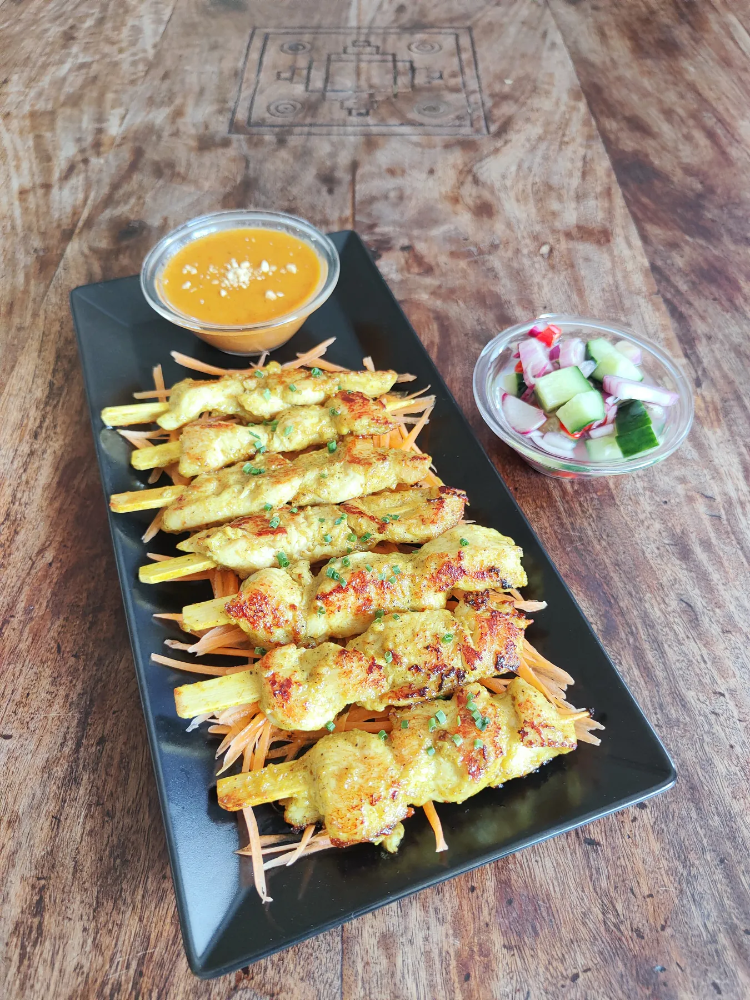
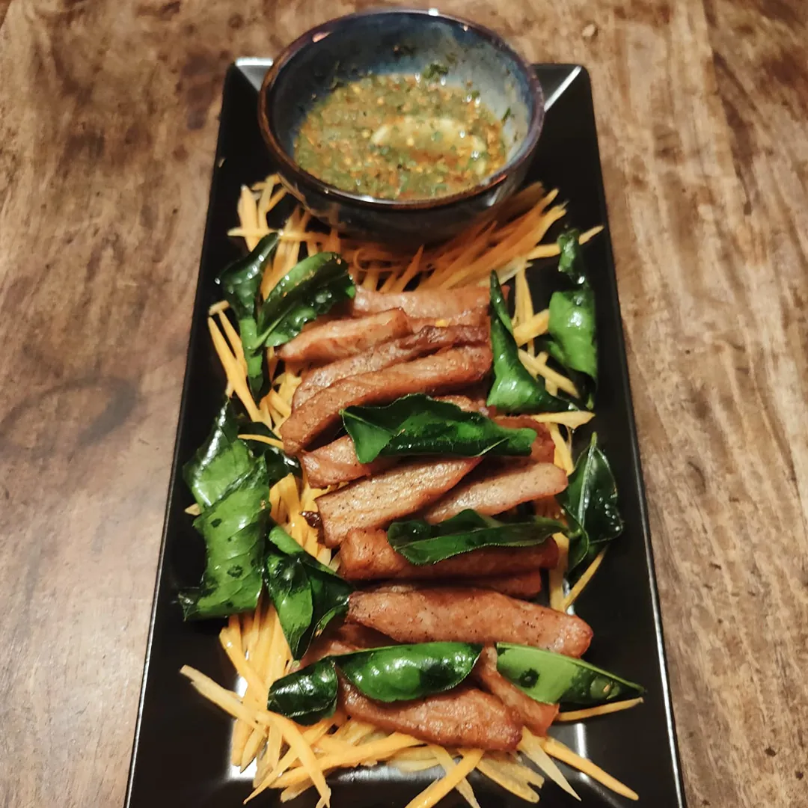
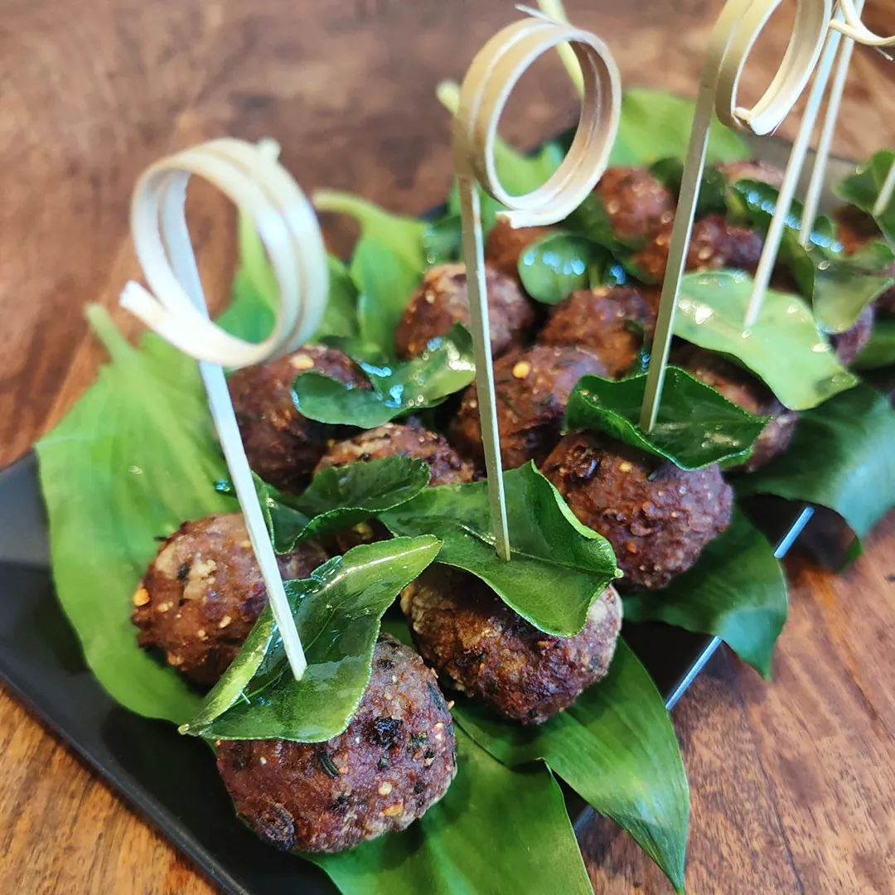
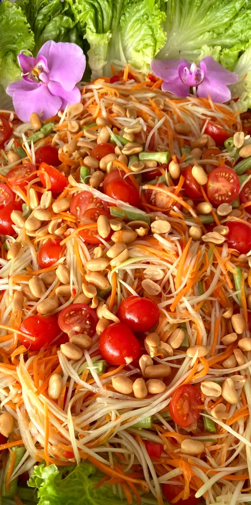
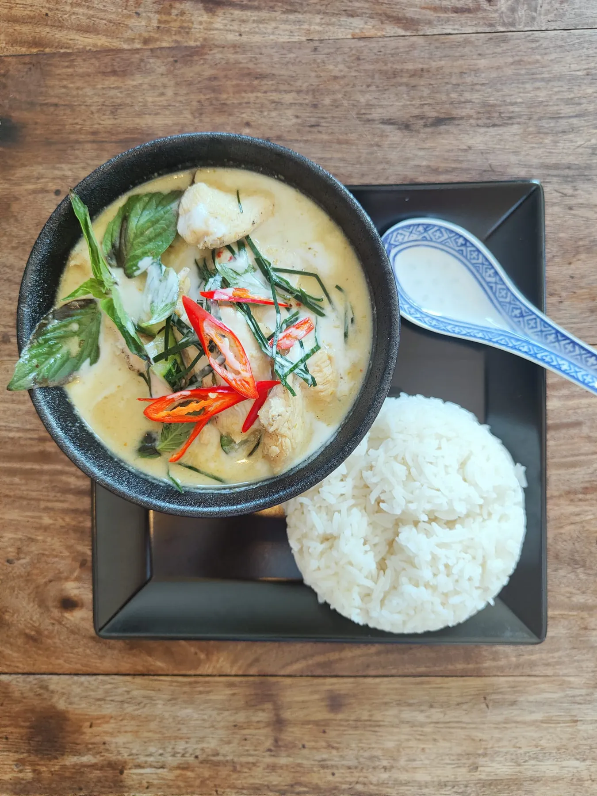

Sur place ou à l'emporter
Le restaurant
La cuisine traditionnelle de la Cheffe, à Remaufens, avec la carte et les suggestions de la semaine.
Restaurant & traiteur thaïlandais · Remaufens
Toute la richesse de la gastronomie thaïlandaise, à travers une cuisine généreuse, imprégnée de saveurs authentiques. Sur place, à l'emporter ou pour vos événements.
Place du Village 5, Remaufens · du mardi au samedi

Notre histoire
« Chaque semaine, nous vous convions à un voyage unique à travers la Thaïlande, grâce à nos recettes traditionnelles. »
Baan Thaï est né de l'alliance de deux passionnés, Line et Jonas, un jeune couple qui veut partager la magie de ce pays à travers sa cuisine. Une créativité nourrie par plus de dix ans d'immersion dans la culture thaïlandaise.
La Cheffe a affiné ses recettes traditionnelles pendant plus d'une décennie en Thaïlande.
Des ingrédients frais de premier choix, sélectionnés, découpés et préparés avec soin.
En plus de la carte, la Cheffe propose deux menus suggestions, et un menu du jour chaque vendredi.
Nos prestations
Une même cuisine, quatre façons d'en profiter.

Sur place ou à l'emporter
La cuisine traditionnelle de la Cheffe, à Remaufens, avec la carte et les suggestions de la semaine.

Dès 4 personnes
Viandes marinées, légumes, bouillon et sauces thaï, appareil inclus. Au restaurant ou à l'emporter, sur commande 2 jours à l'avance.
Jusqu'à 10 personnes
Rouleaux de printemps, beignets de crevettes, brochettes satay, salades : entre amis, en famille ou entre collègues.

Dès 10 personnes
Fêtes, événements d'entreprise ou manifestations : à l'emporter, livré, ou servi sur le lieu de votre choix.
Plateaux à partager
« Découvrez les spécialités de notre Cheffe qui font la renommée de notre établissement. » À commander en plateaux, 3 jours à l'avance.

Accompagnées de leur sauce cacahuète, secrète, préparée maison par la Cheffe.

Lamelles de porc frites, accompagnées de leurs feuilles de kaffir.

Boulettes de bœuf haché, relevées d'herbes traditionnelles thaï.

Salade de papaye verte, carottes, haricots, tomates et cacahuètes.
À table

Horaires · sur place ou à l'emporter